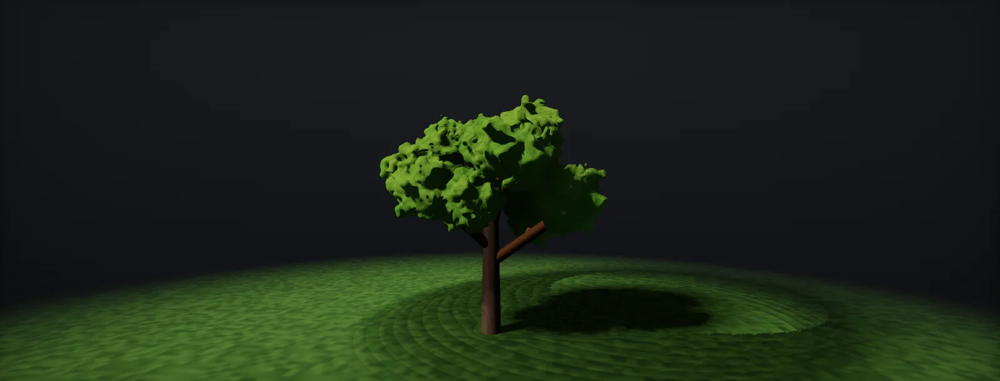

Procedural Trees: SpeedTree and Houdini
How game trees are built procedurally: branch levels and their cost, the pipe model for radii, phyllotaxis, length and gravity profiles, L-systems, leaf cards against meshes, SpeedTree and the Houdini Labs Tree Tools, and the package the engine expects, built for Unity HDRP and Unreal.

Tree structure for games
A game tree is a hierarchy. The trunk carries first-level branches, those carry second-level branches, and the last levels carry leaves. Generators describe each level once (how many children, where on the parent, at what angle, how long) and repeat the rule, which is why a handful of parameters can make thousands of branches. It is also why trees get expensive fast: every level multiplies the count.
Real-time trees therefore model only the first two or three levels as geometry. Everything finer, twigs with their leaves, is painted into textures and placed on flat cards or small meshes. The split point is the main decision of a game tree: deeper geometry looks better up close and costs vertices everywhere the tree is seen; earlier cards cost overdraw (foliage overdraw).
Branch radius: the pipe model
How thick should a child branch be? Leonardo da Vinci noted that the cross-sections of all branches at one height add up to the trunk's cross-section. Botanists call it the : a tree behaves like a bundle of pipes that split. Measurements give exponents Δ between about 1.8 and 2.3, close to 2, which keeps the area; Eloy (2011) showed that this is also the shape that resists wind best:
Generators expose this as a radius falloff or a child-radius scale. Getting it right is the cheapest realism there is: trees whose children are too thick read as cartoon trees, too thin as wire. It also drives LODs, because thin branches are the first geometry to remove.
Leaf and branch placement
Many plants place each new leaf or branch at a fixed angle from the previous one around the stem. The most common angle is the , about 137.5°. Because it is irrational relative to a full turn, no two leaves ever line up exactly, so each leaf shades the ones below as little as possible:
For tree generators this is the rotation or phase parameter of a generator level. Setting it to a round number (90°, 120°, 180°) makes visible rows of branches, which look manufactured. Opposite and alternate arrangements (pairs at 180°, as on maples and ashes) are real too, but then every pair is rotated by 90° against the previous one.
Length, angle and gravity
Children are not the same length all along their parent. In a conifer they are longest at the base and shortest at the top; in many broadleaf trees they are short at the base, longest a third of the way up and short again at the tip. Generators describe that with a curve over the parent's length. A second curve bends branches down under their own weight (gravitropism) or up towards the light (phototropism):
These two curves define the silhouette, which is what the player reads first and what survives into the impostor. Tune them on the whole tree from a distance before any leaf detail, and compare against a photo of the species at the same distance.
L-systems and space colonisation
The classic procedural description of plants is the (Lindenmayer, 1968; Prusinkiewicz and Lindenmayer, The Algorithmic Beauty of Plants, 1990): a string of symbols and rules that rewrite every symbol at once. A turtle then reads the string and draws it. One rule repeated a few times already looks like a plant:
Houdini has an L-system node and the Labs Tree Tools; SpeedTree's generators are a more art-directable version of the same idea: per-level rules, with curves instead of symbols. A different family, space colonisation (Runions et al., 2007), grows branches towards a cloud of attraction points that fills the desired crown shape. It is good for matching a given silhouette and for trees that grow around obstacles.
Leaves: cards, clusters and meshes
A mature tree has tens of thousands of leaves. Three ways to represent them:
- Leaf cards: quads or cut-out polygons with a texture of a twig with many leaves. Few triangles, much overdraw.
- Leaf meshes: every leaf modelled, a few triangles each, opaque. More vertices, little overdraw; what Nanite foliage is built for.
- Fronds: long strips along a branch (palms, ferns, conifer needles), textured with an alpha mask.
Most shipped trees mix them: cards for the twigs and leaves at LOD0, fewer and larger cluster cards in later LODs, an impostor at the end. Cards are cut close to the painted leaves to waste fewer pixels (tight cutouts).
SpeedTree
is the standard tree tool in games (owned by Unity since 2021; the current release is SpeedTree Modeler 10). A tree is a stack of generators: a trunk generator, branch generators for each level, leaf, frond and card generators. Each generator places nodes on its parent and has curves for length, radius, angle, gravity and the rest of this unit, plus hand-drawing and per-node editing when a rule is not enough.
What makes it a game tool rather than a modelling tool is the output:
- LODs generated from the same structure: fewer branches, fewer segments and sides, leaves merged.
- Wind set up in the Modeler and baked into vertex data that the engine's SpeedTree shaders read, so the engine needs no extra data (baking vertex data).
- Texture atlases for leaves and a Card generator that renders twigs into cards inside the tool.
- Export as
.st9for Unreal and Unity 6, the older.stformat for earlier versions, or FBX for anything else.
Houdini
Houdini is used when trees must follow a studio pipeline, be generated in bulk, or carry custom data. The SideFX Labs Tree Tools are a ready-made starting point: a controller, a trunk generator, branch generators, a branch placer and a leaf generator, chained like SpeedTree's generators. They output the mesh plus the internal curves, which is the important part: every point knows which branch it belongs to, where that branch starts and how deep in the hierarchy it is.
From there a tree is ordinary geometry processing: attributes for pivot, level, stiffness and phase written to UV sets (baking vertex data), cards placed by scattering, normals edited (canopy normals), LODs by removing levels and reducing curves, and cards rendered with the Labs Maps Baker. The whole chain is an HDA that can produce a hundred variations of a species overnight.
Other routes exist: Blender's Geometry Nodes and add-ons, Unreal's PCG for scattering (not for growing single trees), and photogrammetry for hero trunks. The data the engine needs is the same in every case.
What the pipeline must deliver
Whatever tool builds the tree, the engine expects the same package. The rest of the Foliage units explain each item:
| Deliverable | Why the engine needs it | Where it is explained |
|---|---|---|
| LOD chain | A tree on screen at 300 m must not cost what it costs at 3 m | LOD chains |
| Pivots, hierarchy level, stiffness, phase | The wind shader rotates each branch around its own attachment point | pivots in UV channels |
| Masks for flutter and bending | Leaf edges flutter, the trunk base must not move | leaf flutter |
| Edited normals and vertex AO | Cards lit with their own normals look like a pile of paper | canopy normals |
| Leaf atlas, bark textures, material count | Every extra material is another batch per tree | atlases |
| Impostor or billboard | The last LOD, often for most of the trees on screen | octahedral impostors |
| Collision proxy and bounds | Physics uses a capsule for the trunk; culling bounds must include the wind sway | culling |
Build it in Unity HDRP
Two routes into Unity: SpeedTree files through Unity's SpeedTree importer, and FBX trees from Houdini (or SpeedTree's FBX export) through the model importer, with an editor script that sets the import rules and reports what each tree contains. Written for Unity 6 with HDRP 17; Unity 2022 LTS works the same apart from a few renamed menu entries.
- SpeedTree route. Export
.st9from SpeedTree Modeler (Games export, with the textures) straight into a folder underAssets/. Unity 6 imports it with the SpeedTree 9 Importer: a prefab with a LOD Group, materials and the wind settings from the Modeler. - In HDRP, check the generated materials. Extract them from the prefab (Materials tab of the importer) and make sure they use the SpeedTree HDRP shaders; a standard HDRP Lit material loses the SpeedTree wind. The importer's Wind tab sets Strength Response, Direction Response and Randomness.
- Add a Wind Zone (GameObject > 3D Object > Wind Zone). SpeedTree wind only moves while one exists. Its default Main strength of 1 is strong; start around 0.3.
- FBX route. Put
TreeImportCheck.csinAssets/Editor/and import trees into a folder namedFoliage. Name the LOD meshesOak_LOD0,Oak_LOD1and so on in Houdini or SpeedTree; Unity builds the LOD Group from those names. - Read the report in the Console: vertex and triangle counts per LOD, material count, and which UV channels arrived. Channels are counted from 0, as in the Shader Graph UV node and the Unreal TexCoord node. A missing channel 2 means the pivot data for wind did not survive the export. In Houdini the FBX UV sets come from the attributes
uv,uv2,uv3…, so channel 2 is the attributeuv3. - Open the prefab and set the LOD Group transition heights against the budget in LOD counts; set Fade Mode to Cross Fade if the shader supports it.
// Assets/Editor/TreeImportCheck.cs
// Import rules and a report for trees exported from SpeedTree (as FBX) or Houdini.
// Applies to models under any folder named "Foliage". Unity builds a LOD Group by itself
// when the FBX children are named *_LOD0, *_LOD1, ...
using System.Collections.Generic;
using System.Text;
using UnityEditor;
using UnityEngine;
public class TreeImportCheck : AssetPostprocessor
{
static bool IsFoliage(string path) => path.Replace('\\', '/').Contains("/Foliage/");
void OnPreprocessModel()
{
if (!IsFoliage(assetPath)) return;
var mi = (ModelImporter)assetImporter;
mi.meshCompression = ModelImporterMeshCompression.Off; // keeps pivot data in the UVs at full precision
mi.importNormals = ModelImporterNormals.Import; // edited foliage normals must survive import
mi.importTangents = ModelImporterTangents.CalculateMikk;
mi.isReadable = false;
mi.generateSecondaryUV = false; // UV1 may carry wind data: never overwrite it
mi.importAnimation = false;
}
void OnPostprocessModel(GameObject root)
{
if (!IsFoliage(assetPath)) return;
var sb = new StringBuilder($"Tree import: {assetPath}\n");
var uv = new List<Vector4>();
foreach (var mf in root.GetComponentsInChildren<MeshFilter>(true))
{
var m = mf.sharedMesh; if (m == null) continue;
sb.Append($" {mf.name}: {m.vertexCount} verts, {m.triangles.Length / 3} tris, {m.subMeshCount} materials, UV channels: ");
for (int ch = 0; ch < 8; ch++) { m.GetUVs(ch, uv); if (uv.Count > 0) sb.Append(ch).Append(' '); }
m.GetUVs(2, uv);
if (uv.Count == 0) sb.Append(" <- no UV channel 2: no pivot data for wind");
sb.Append('\n');
}
var lod = root.GetComponent<LODGroup>();
sb.Append(lod != null ? $" LOD Group with {lod.lodCount} levels\n" : " No LOD Group: name children *_LOD0, *_LOD1, ...\n");
Debug.Log(sb.ToString());
}
}Mesh compression is switched off on purpose: compressed meshes quantise UV channels, and pivot positions stored there then wobble by centimetres (precision).
Build it in Unreal Engine
Unreal imports SpeedTree's .st9 files directly and Houdini trees as FBX (or through Houdini Engine). The check is the same: LODs, materials, and the extra UV sets that carry wind data. Written for Unreal Engine 5.6 and later. Substrate is production-ready from 5.7; check Project Settings > Rendering > Substrate to see which material model a project uses.
- SpeedTree. Drag the
.st9file into the Content Browser. The import dialog creates the static mesh with its LODs, the materials with SpeedTree wind, and optionally Nanite. Place a Wind Directional Source actor in the level to drive SpeedTree wind. - Houdini. Export FBX with the LODs as
_LOD0,_LOD1children, or bake through the Houdini Engine plugin. In the import options enable Import Mesh LODs; for foliage disable Generate Lightmap UVs if you rely on another UV index for wind data. - Open the static mesh. In LOD Settings check the screen sizes; in each LOD's Build Settings enable Use Full Precision UVs when UV sets carry pivot positions (the default stores UVs as 16-bit floats).
- In Details > General Settings the UV Channels count must include the wind channels. Use the UV menu of the static mesh editor to display each channel and confirm it holds data, not a copy of UV0.
- For Nanite trees (opaque leaves, or masked cards where the project accepts the cost), enable Nanite in the import or on the mesh. Nanite meshes ignore the LOD chain and use their own simplification.
SpeedTree's legacy .st import is still documented for older projects; new projects should use .st9.
Sources and further reading
The formulas and engine details in this unit come from these references. Engine documentation changes between versions.
- DocsSpeedTree Modeler 10 manualUnityGenerators, card generator, atlases, wind, LOD and engine export.
- DocsImporting SpeedTree models into UnityUnityFormats per Unity version, render pipelines, Wind Zones and LOD Groups.
- DocsLabs Tree ToolsSideFX LabsController, trunk, branch and leaf generators and the branch placer.
- BookThe Algorithmic Beauty of PlantsPrusinkiewicz, Lindenmayer · 1990L-systems and phyllotaxis, free from the authors.
- PaperLeonardo's rule, self-similarity and wind-induced stresses in treesChristophe Eloy · Physical Review Letters, 2011Why branch cross-sections add up, and the measured exponents.
- PaperModeling trees with a space colonization algorithmRunions, Lane, Prusinkiewicz · Eurographics NPH 2007Growing branches towards attraction points.